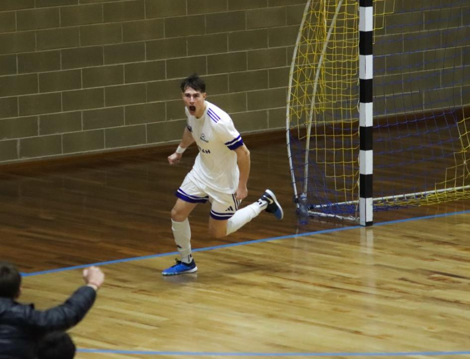

I seggiolai conquistano un allungo importantissimo, primo tempo bellissimo con Fusco protagonista. Ripresa dove testa e gamba dei seggiolai fanno la differenza
I giocatori del Manzano giocano da uomini e vincono per 8-3 lo scontro diretto col Palmanova. Primo tempo intenso, bello ed emozionante. Fusco fa doppietta e porta i suoi sul 2-0. Gli amaranto costruiscono la rimonta e si arriva alla sirena sul 2-2. Ripresa dove Pozzatello para tantissimo in avvio, prima del 3-2 di Francesco Sestili. I seggiolai non perdono la testa e pareggiano subito grazie a Fusco. Da lì è un dominio manzanese, Klejdi Zharri e Iurlaro certificano il vantaggio. La doppietta di Leonardo De Giorgio e un’autorete chiudono la pratica. Le chance di vittoria del campionato sono concrete più che mai, ora sta alla squadra chiudere l’opera.
PRIMO TEMPO – Fin da subito il Manzano approccia il match con maggiore convinzione e intensità rispetto alla gara d’andata. Le prime occasioni sono per i seggiolai, con i fratelli De Giorgio e il tandem Genna-Fusco. Il Palmanova si appoggia alle giocate di Znidarcic e al rientrante Francesco Sestili, recuperato in extremis.
Vantaggio Manzano al 7’: Fusco si gira dal limite e fa 1-0. Il Palmanova risponde subito: Znidarcic contrasta con Pascale e si libera la traiettoria per il tiro, colpendo il palo pieno. Il legno sta ancora tremando quando un errore su una rimessa offensiva per il Palmanova spiana la strada al contropiede solitario di Fusco, che arrivato a tu per tu con Rovere non sbaglia: 2-0.
Fusco è ispiratissimo e cerca l’assist per il tris di Polidori, bravo Rovere a murarlo in uscita.
Sembra il delitto perfetto per il Manzano ma il Palmanova è ancora vivo. Al 12’ Znidarcic fa un grande giocata e sfonda sulla fascia, palla forte e tesa sul secondo palo dove la deviazione di Polidori manda la sfera nella sua porta: 1-2.
Partita apertissima con Pascale pericoloso in avanti, il capitano subisce fallo in attacco, con Fusco che sfrutta il vantaggio per provare a saltare il portiere e fare il 3-1, il suo tiro termina alto con la porta semivuota. Gli amaranto ringraziano e pareggiano: Francesco Sestili va via sulla fascia e la mette in mezzo per Kikelj, Pozzatello si oppone come può ma la palla rimbalza in porta: 2-2.
I padroni di casa provano a completare l’opera, Francesco Sestili si fionda su una palla persa, provvidenziale Pozzatello in uscita. In questo frangente viene fuori il cuore dei seggiolai, autori di diversi recuperi difensivi, soprattutto coi generosi Iurlaro e Leonardo De Giorgio. La squadra di Sironi e Movio è comunque in partita: Fusco, Leonardo De Giorgio e Iurlaro confezionano diverse palle gol, importante soprattutto quella del numero 10 che viene chiuso dall’ex Rovere dopo un contropiede orchestrato da Polidori. Si va al riposo col pareggio.
SECONDO TEMPO – Ripresa che inizia con un Palmanova che ha il piede pigiato sull’acceleratore. I primi due minuti sono di grande sofferenza. Pozzatello si erge a baluardo della difesa respingendo i tentativi dei suoi ex compagni. Botta di Znidarcic e ribattuta di Kikelj entrambi ben parati dal portiere numero 14. Sul corner seguente ecco un miracolo con il tuffo a togliere la bordata di Znidarcic dall’incrocio dei pali. Ci prova anche Cavalli da fuori, puntuale il tuffo a coprire l’angolino.
Alla lunga l’assalto amaranto paga: bel corner di Kikelj per l’inserimento di Francesco Sestili che fa 3-2.
Il palazzetto esplode per la rimonta completata ma il Manzano rimane in partita con la testa e costruisce subito il pari. Iurlaro allunga per Leonardo De Giorgio sulla fascia, il quale prolunga ancora di tacco per la corsa di Fusco. Ora il pivot ha due opzioni: ridarla in mezzo per l’inserimento di De Giorgio o cercare il secondo palo con un tiro angolato. Il numero 9 propende per la seconda, e ha ragione. Il suo colpo da biliardo vale il 3-3 e la tripletta.
Siamo al 4’ della ripresa. La gamba del Manzano e la panchina lunga iniziano a farsi sentire. Klejdi Zharri ruba palla sulla trequarti e serve Tancos in area, qui varie ribattute proteggono la porta del Palmanova, finché proprio Zharri non mette la zampata decisiva: 4-3 e nuovo vantaggio Manzano.
L’inerzia della gara è tutta dalla parte della squadra di Sironi e Movio: al 12’ sapiente imbucata di Polidori per Iurlaro in area: palla in fondo al sacco e 5-3.
Passa meno di un minuto e sale in cattedra Leonardo De Giorgio: il numero 7 sfrutta una cattiva pressione avversaria per liberarsi lo spazio in mezzo, arrivato all’altezza del centrocampo lascia partire un rasoterra potente che sorprende Rovere.
Il 6-3 spinge mister Bozic a schierare il portiere di movimento. I seggiolai si difendono bene e concedono qualcosa solo a Kikelj che alza di troppo la mira. Proprio il pivot sloveno commetterà poi un errore che costerà il 7-3, con un passaggio all’indietro mal calibrato che finirà nella porta amaranto.
Partita chiusa da Leonardo De Giorgio che indovina un altro gol dalla distanza con la porta vuota: 8-3 finale.
Ora il Manzano è padrone del suo destino, primo a +4 sulla seconda, ha due match point per vincere il campionato. Prima occasione sabato prossimo in casa contro l’Udine City. Squadra giovane e ostica con tanta voglia di chiudere bene la sua stagione, dopo un buon percorso tra Serie C e Under 19.